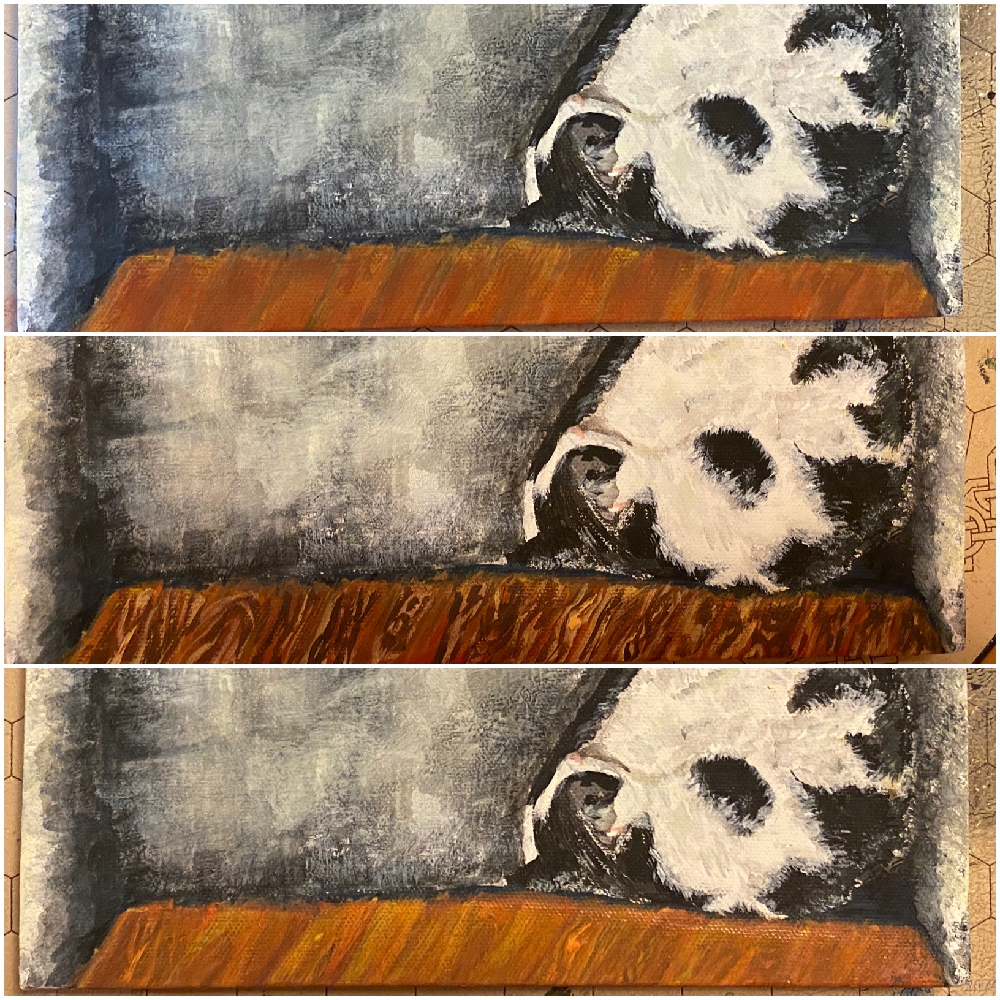

This was also sent out as a newsletter. If you’d like to get project updates like this as email, you can subscribe.
Hello. It’s been a while. Again!
I know people expect computer art from me. Unfortunately, my programming and design concentration has been shot lately. So, I can’t get those to you at the moment.
Instead, I’ve got something else for you: physical paintings! Or photos of physical paintings, at least. And a site for them: https://jimkang.com/paintings/ (It has an RSS feed, in case you’re into that.)
Here is one of Bonus Cat and Dr. Wily sleeping, which is one of their top activities.
I don’t know how to capture certain kinds of textures, so the chair and the floor took a long time to paint. There were many Ecce Homo moments.
I usually let each previous attempt at painting a surface to bleed through in the next attempt. It added some complexity that I felt was satsifying, even when it didn’t help with representational accuracy. I thought of it like using the Fade command instead of Undo in Photoshop.
There was a night in which I furiously painted the floor over and over again. I made myself stop, but I felt this twitch to paint over it more that carried over into the following day.

After I did a pass of highlights that were more extreme than I expected, I felt regret and immediately wanted to paint over them all. My partner Katt, who actually knows how to paint, told me to not look at it for a week. So, I put it away.
I lasted two days.
That turned out to be enough, though! I was then able to view it free of compulsions. I decided it was fine and done.
The Bonus and Wily painting above is actually the seventh cat painting in our house. Katt painted three, R. painted two, and I did a Bonus Cat one last year.
Here’s one of Katt’s.

Here’s one of R.’s.

We’re quite into cat painting. We will not stop.
That said, I am still interested in that other painting genre. I believe it is known as “non-cat paintings”.
At the end of each of the Bonus and Wily painting sessions, there was some paint left on the palette. I used that paint to make these nine tiny paintings.
It was a relief to not have to make the paint represent anything, and it was nice to not have to pick colors. The one in the bottom center is my favorite, and it basically has only one color.
I once again had judgment trouble while arranging these. So, I wrote this program to run through a bunch of random arrangements quickly. You can use it to come up with your own arrangement, if you like.
Finally, here’s a landscape I did in January. Remember January? Ah, pandemic-free January.
I got three different types of Bob Ross trees in there! I never saw him paint brambles, though. So, I was on my own and ended up doing weird things like scratching paint on the canvas with toothpicks.
I hope each of you are well.
We’re in terrain Bob Ross never taught us about, and I’m personally having a sad and difficult time with it. Although, he did tell us to paint regularly, which does remediate misery. And I’m sure he wouldn’t mind if you substituted anything else that makes you happy without draining you.
If you’re feeling sad and want to say something to someone, you can say it to me! Unlike whoever Rob Halford was addressing in Breaking the Law, I do know what it’s like!
Jim
Appendix: Physical art
Aside from the judgment struggles, I enjoy working on paintings. A common feeling for me when I’m working on a digital project is “well, this is difficult but I’m excited to see how it turns out.” When I’m painting, I feel actual pleasure, rather than just excitement about potential.
I think this is because, while the appearance of paint is (delightfully) unpredictable when it lands on the canvas, it is predictable in the sense that it doesn’t crash or just disappear when a new version of an OS goes out.
You are literally moving the paint around, not writing text about where the paint should go and thinking about how that text will be interpreted. This is reassuring. Sher Minn has a good post that speaks to why this is satisfying. It’s about how making physical things and how making digital things affect a person. G In addition to advantages in the process of their making, physical objects as artifacts are very satisfying. Physical objects are perceptually rich. For free, you get infinite levels of detail in every dimension, even in ones you didn’t plan for.
Sher Minn pointed out that physical objects have provenance—an object and its materials have a history, even if you don’t know what it is. So, they also have depth in the dimension of time.
This includes paintings. Paintings have actual depth (I mean “depth” as one of the Ds in “3D” here). So, they look different when viewed at different angles and at different times of day. They age and have a history and, possibly, layers.
However, you can’t share physical objects in a practical way. In the ‘50s, the Constructivist movement was really into this idea that printing would democratize art. Original physical paintings would no longer be important. Everyone would be able to get prints of whatever they wanted, and it would be the “content” that would be valued.
We know today that “high art” is a financial instrument and that people’s reception of art is affected to an extent by the dollar value and status of the original. At the same time, the Internet has commoditized art into fuel for aggregators like Instagram and Twitter.
Still, the constructivists were right about being able to get printable (or digital) art to a lot of people that would otherwise not see it. Unfortunately, even during non-pandemic times, many of you are too far away to come to our apartment to see our cat paintings. But you can look at web pages that either represent physical art or are art themselves. Also, digital art can be produced automatically, without an actual person spending time on it or using up materials.
So, I’m still going to be making computer art, even though I realized I’ve been severely undervaluing physical art.